AI/ML
Fine-tune NVIDIA Nemotron 3 models with Amazon SageMaker AI serverless model customization
In this post, we explore what makes the Nemotron 3 architecture unique, walk through the fine-tuning techniques available, and show you step-by-step how to get started with serverless customization using SageMaker Studio. By fine-tuning foundation models FMs on domain-specific data, businesses teach AI their unique workflows, terminology, and deep domain specialization, along with strict adherence to brand voice and fewer hallucinations.
원문 보기